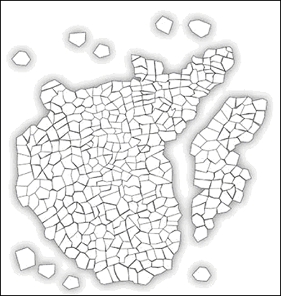
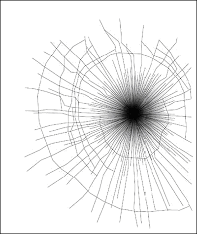

Einscheibensicherheitsglas (ESG) und Verbundsicherheitsglas (VSG) haben verschiedene Brucheigenschaften und sind daher für unterschiedliche Anwendungen geeignet.
ESG ist thermisch vorgespanntes Glas, das bei Zerstörung in kleine stumpfkantige Glaskrümel (würfelförmige Fragmente) zerfällt und damit weitgehend vor Verletzungen schützt.
Restrisiken durch das Bruchverhalten beim Zerbersten einer Scheibe aus ESG sind allerdings zum Einen das explosionsartige Zerspringen der Scheibe in Glaskrümel und zum Anderen das Zusammenhalten größerer Schollen aus noch zusammenhängenden Glaskrümeln, die beim Herunterfallen Beschäftigte treffen und Verletzungen verursachen können.
ESG ist gegen stumpfe Schläge auf die Scheibenfläche sehr robust, weil es sich durchbiegen kann. An den Kantenbereichen hingegen ist es sehr empfindlich.

Abb. 3: Bruchbild ESG
VSG besteht aus zwei oder mehreren Glasscheiben, die durch mindestens eine organische Zwischenschicht zu einer Einheit verbunden werden. Bei mechanischer Überlastung (z. B. Stoß, Schlag und Beschuss) bricht VSG zwar an, aber die Bruchstücke haften fest an der Zwischenlage. Es entstehen somit keine losen, scharfkantigen Glasbruchstücke; die Verletzungsgefahr wird weitgehend herabgesetzt.

Abb. 4: Bruchbild VSG
Je nach Zusammensetzung und Dicke ist VSG von splitterbindend bis hin zu sprengwirkungshemmend. Es findet daher häufig Verwendung in Fenstern, Türen und Abtrennungen, die Personen und hohe Sachwerte schützen, z. B. an Kassenschaltern oder bei Juwelieren.
Verglichen mit ESG kommt es bei Schlägen frontal gegen die Scheibe aus VSG schneller zum Bruch.
VSG ist nicht für jeden Anwendungsfall der sicherere Werkstoff. Bei rahmenlosen Ganzglastüren beispielsweise wird in der Regel ESG verwendet, da mit VSG die Flügel zu schwer werden. Diese Türen werden in der Regel nur an zwei Bändern (Scharnieren) gehalten. Kommt es zum Bruch eines solchen Flügels aus VSG, besteht die Gefahr, dass die Scheibe ihre Statik verliert und zusammenhängend als Ganzes zusammenbricht. Dabei kann sie eine Person unter sich begraben.